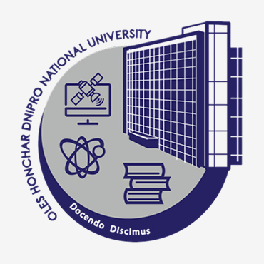
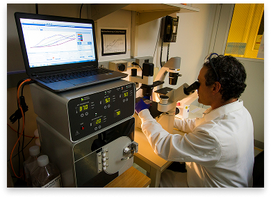
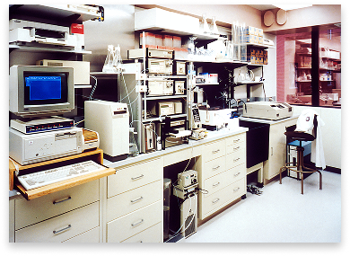
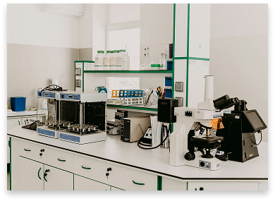

60+
Проєктів
300+
Учасників
20+
Технічних експертів
Noosphere Engineering School Dnipro створює ефективну startup платформу для молодих спеціалістів України та інтегрує наукові підходи у бізнес-середовище. Лабораторії Інжинірингової школи Noosphere – це осередки інженерної творчості, де студенти та молоді вчені України можуть розвивати свої інноваційні ідеї, отримуючи технологічну та маркетингову підтримку, а також супровід досвідчених менторів та експертів Noosphere.
Проєктів
Учасників
Технічних експертів
Проєкт Noosphere Engineering School Dnipro
Перша науково-технічна лабораторія NES була відкрита у 2014 році при підтримці
Громадської організації «Асоціація Noosphere» на базі Дніпровського національного
університету імені Олеся Гончара.
В осередках Noosphere Engineering School Dnipro майбутні інженери, науковці та підприємці України отримують практичний досвід створення інноваційних проєктів і стартапів.


Ми віримо у творчий потенціал кожної людини

Ми віримо в інтелектуальний і творчий потенціал заохочуємо та підтримуємо його розвиток

Ми підтримуємо проєкти, спрямовані на комфортного та безпечного майбутнього людства

Філософію та науку ми вважаємо фундаментом успішних бізнес-проєктів та інноваційних продуктів

Відповідальність перед наступними поколіннями за якість життя та збереження навколишнього середовища

Ми ділимося науковими знаннями та технологічною інфраструктурою
Ми створюємо ефективну і стабільну startup платформу на базі провідних закладів вищої освіти України для інтеграції наукових підходів у бізнес та створення технологічних продуктів світового рівня
Noosphere Engineering School Dnipro прагне стати найбільш компетентним та найвпливовішим українським майданчиком розвитку deep tech інновацій, який об'єднує науку і бізнес


